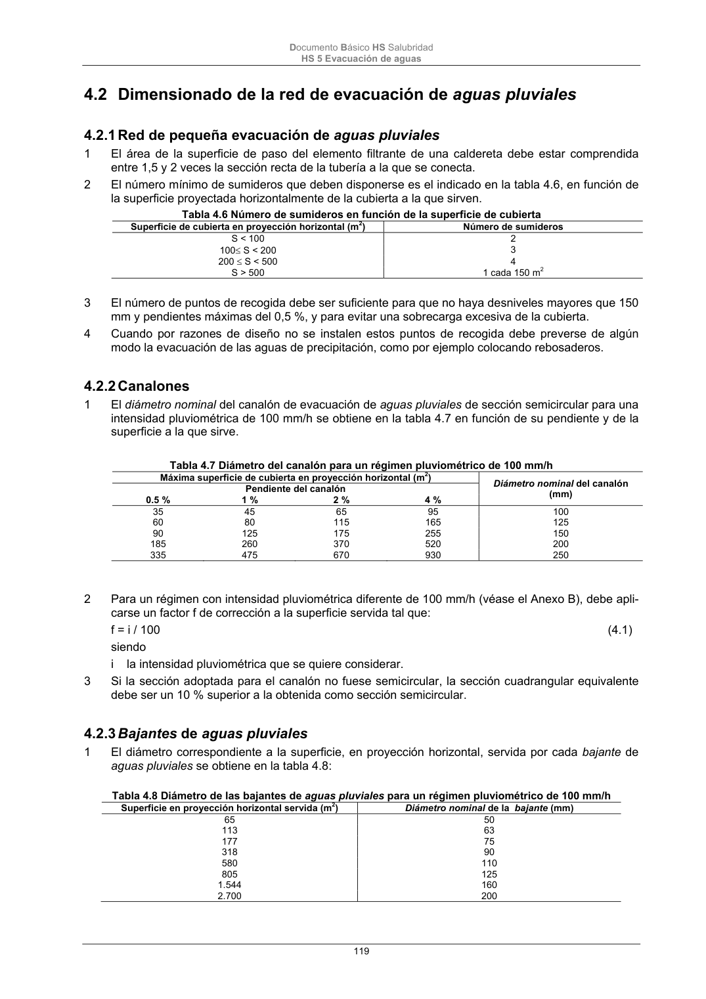

DB-HS · Fragmento de PDF p119 · versión 2022-06-14 · capa oficial
Formatos: JSON compacto · Markdown · PDF fuente
Ámbito del documento · texto del ámbito · documento y tablas
ID técnico a0264 · PDF pág. 119 · jerarquía no validada por persona · no es capítulo: sin_linea_de_encabezado · padre: raíz · literal original en el contenido: «4.2 Dimensionado de la red de evacuación de aguas pluviales 4.2.1 Red de pequeña evacuación de aguas pluviales»
4.2 Dimensionado de la red de evacuación de aguas pluviales 4.2.1 Red de pequeña evacuación de aguas pluviales 4.2.1 Red de pequeña evacuación de aguas pluviales 1 El área de la superficie de paso del elemento filtrante de una caldereta debe estar comprendida entre 1,5 y 2 veces la sección recta de la tubería a la que se conecta. 2 El número mínimo de sumideros que deben disponerse es el indicado en la tabla 4.6, en función de la superficie proyectada horizontalmente de la cubierta a la que sirven. Tabla 4.6 Número de sumideros en función de la superficie de cubierta Superficie de cubierta en proyección horizontal (m 2) Número de sumideros S < 100 2 100 S < 200 3 200 S < 500 4 S > 500 1 cada 150 m 2 3 El número de puntos de recogida debe ser suficiente para que no haya desniveles mayores que 150 mm y pendientes máximas del 0,5 %, y para evitar una sobrecarga excesiva de la cubierta. 4 Cuando por razones de diseño no se instalen estos puntos de recogida debe preverse de algún modo la evacuación de las aguas de precipitación, como por ejemplo colocando rebosaderos.

PDF fuente redistribuible: copia fiel enlazada en esta página (SHA256 verificado).